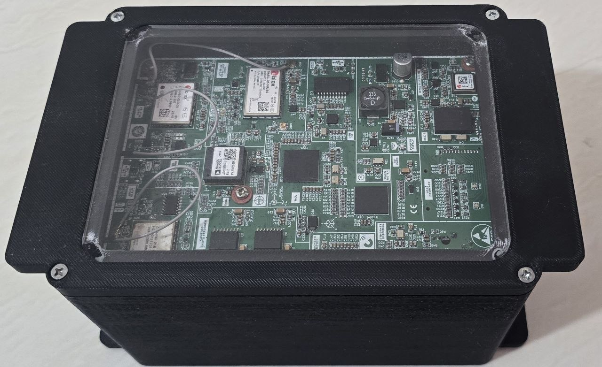
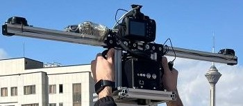
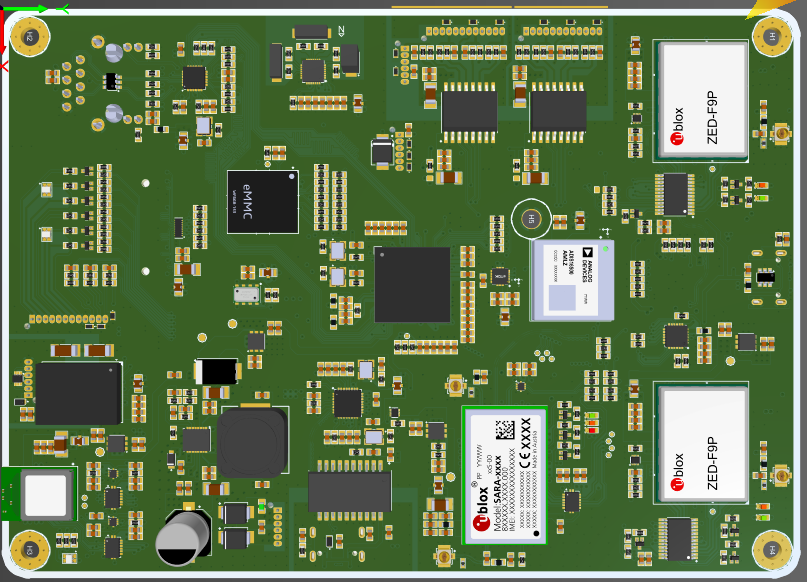
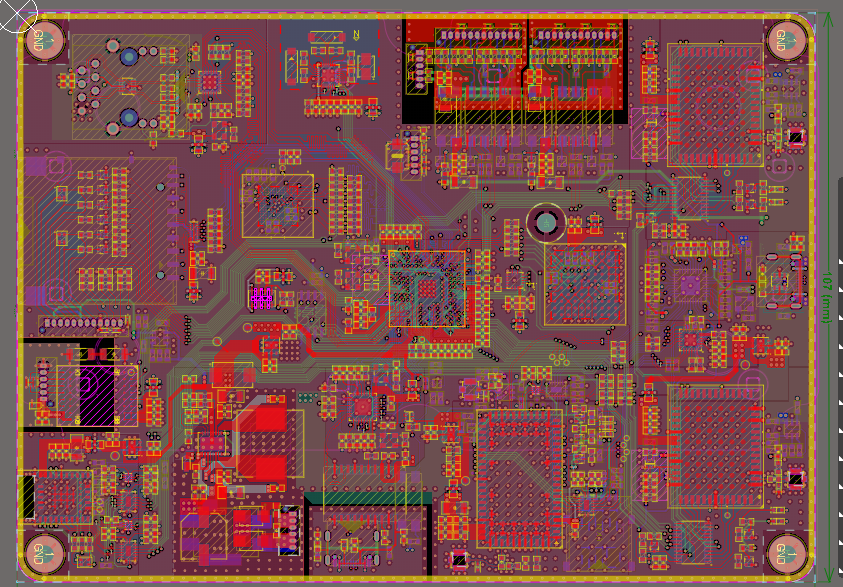
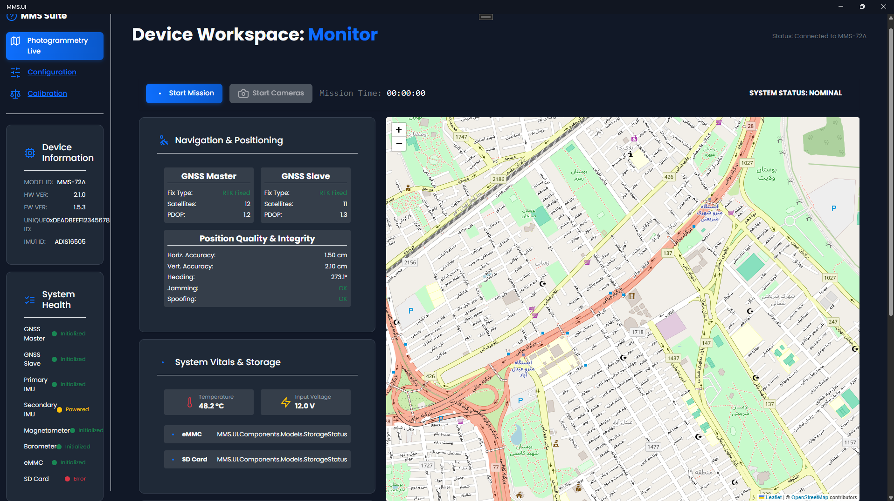
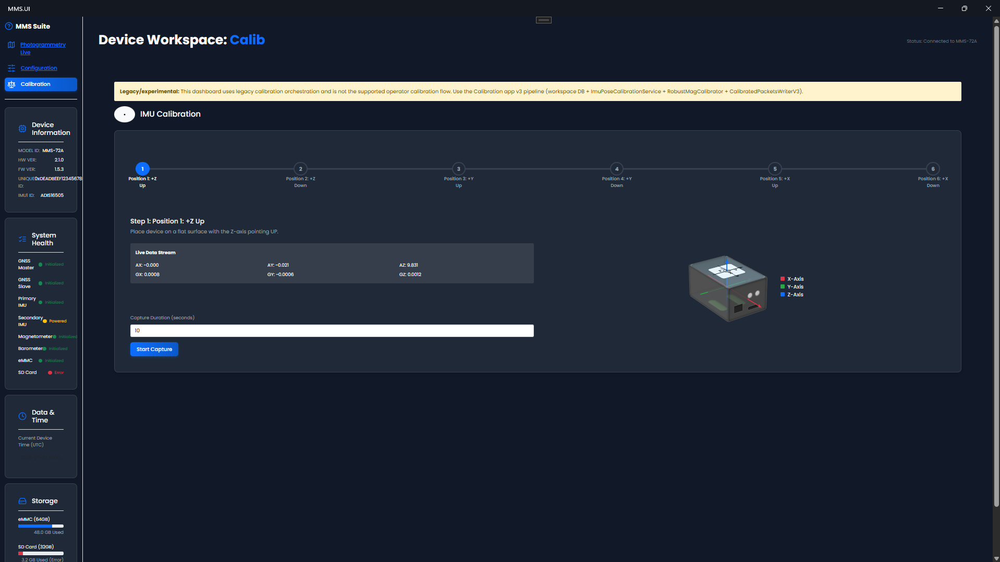
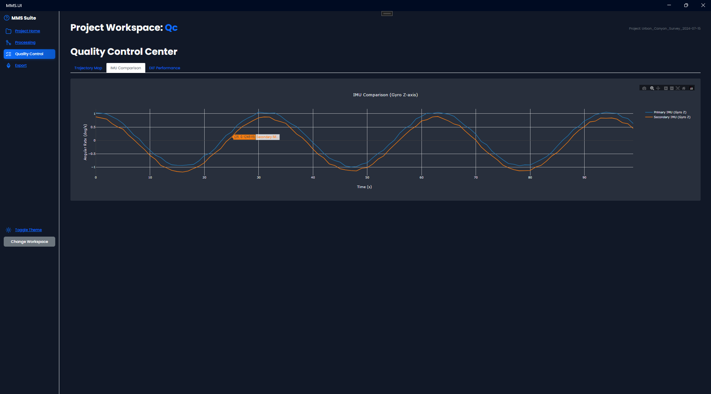

Mobile mapping system
Experienced as a Firmware Developer, Desktop Application Developer, and Hardware Team Lead in the development of a high-precision real-time aerial mapping and navigation system based on dual-core STM32H7 microcontrollers. Developed embedded firmware using FreeRTOS with more than 30 concurrent real-time tasks executing under microsecond-level timing constraints. Integrated multiple sensors including accelerometers, gyroscopes, magnetometers, barometers, and dual GNSS modules to achieve accurate positioning and orientation estimation for aerial mapping applications.
Implemented high-speed interrupt-based data acquisition and synchronized sensor logging to SD card storage, alongside external flash memory management for system configuration and parameters. Designed and integrated communication interfaces including Bluetooth, Wi-Fi, and Ethernet (LAN) for real-time connectivity and data transfer. Developed precise multi-camera synchronization and triggering mechanisms supporting up to 6 simultaneous cameras for aerial photogrammetry and 2D mapping generation.
In parallel, developed Windows desktop applications using .NET Blazor, C#, JavaScript, HTML/CSS, and SQLite for real-time monitoring, visualization, processing, and analysis of sensor and navigation data. Also led hardware development activities including system architecture, hardware integration, debugging, and coordination of embedded hardware design tasks, with strong focus on real-time reliability, synchronization accuracy, and high-performance system operation.






